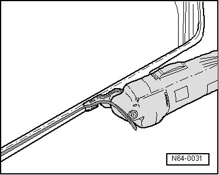
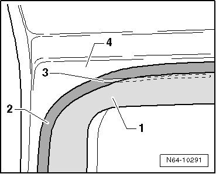

Window Flange, Preparing For Glazing
Flush Bonded Windows
Window Flange, Preparing for Glazing
- Cut back remaining material on window flange using the electric cutter (V.A.G 1561 A) and the cutting blade (V.A.G 1561/8), do not remove all residue under any circumstance.

• The remaining material serves as a base for the new adhesive sealant being applied. Keep the adhesive surfaces free of dirt and grease.
CAUTION!
Activator must not come into contact with the paint - otherwise paint will be damaged.
Exception: If bonding is not performed immediately after cutting back, the remaining material must be activated using the activator D 181 801 A1.
• If body flange is being worked on or is partially replaced, it must be cleaned and primed again after painting the corresponding area.
• It is possible that the laser weld seam does not lie in the area of the adhesive bead. In this case, the open weld seam must be sealed with window adhesive before bonding the window.
- If the laser weld seam - 3 - on the sheet metal flange - 4 - is not covered by the adhesive bead - 1 -, coat the weld seam - 3 - with glass/paint primer D 009 200 02 - 3 - and fill the weld seam with window adhesive DH 009 100 03 - 1 -.
